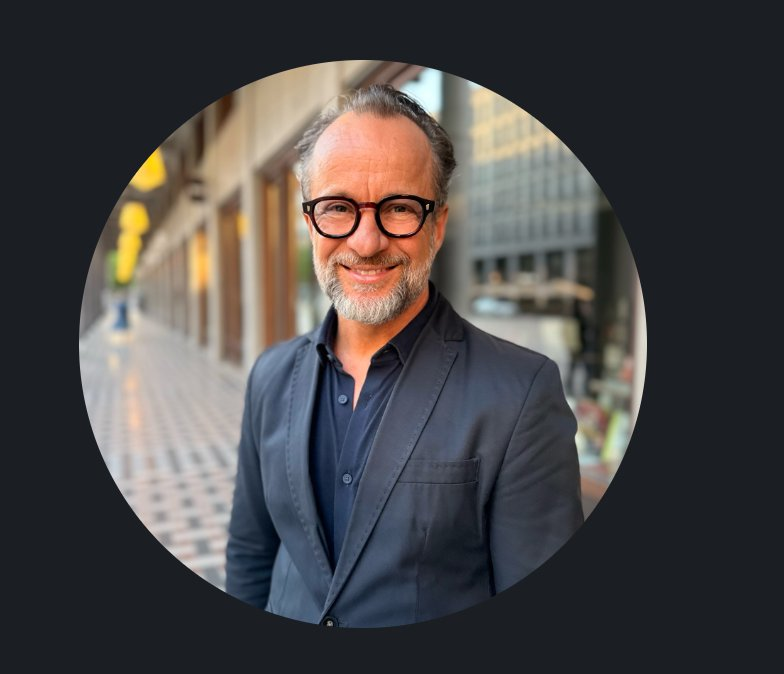
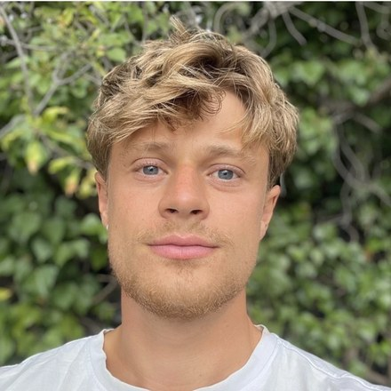

Sie haben Ihrem Kind Bildung eröffnet, Möglichkeiten, Wege.
Und doch bleibt eine Frage, die auf keinem Zeugnis steht.
Ein evidenzbasiertes Entwicklungsprogramm für den Übergang ins eigene Leben — für junge Menschen zwischen 18 und 25, wenn die Fragen beginnen, die kein Bildungsweg allein beantworten kann.
Ihr Kind hat erreicht, worauf vieles hingearbeitet hat: einen Abschluss, einen nächsten Schritt, einen Platz, um den andere ringen. Und trotzdem kennen Sie vielleicht diesen Moment — beim Abendessen, am Telefon, zwischen zwei Terminen —, in dem Sie sich fragen, ob hinter all dem Erreichten auch eine eigene Richtung gewachsen ist. Nicht aus Sorge. Sondern weil Sie Ihr Kind kennen.
Die eigentliche Frage ist nicht, ob Ihr Kind bereit ist für den nächsten Schritt. Sondern, ob es bereit ist — nicht für die Universität, nicht für die Karriere, sondern für das Leben.
„Über Jahre hatten wir das Gefühl, dass ihm etwas fehlte, das wir selbst nicht benennen konnten. Nicht weil es ihm an Intelligenz fehlte — sondern weil ihm eine Richtung fehlte, die wirklich seine eigene war."
Viele junge Menschen sind nach dem Abschluss leistungsfähig, klug und motiviert — und spüren trotzdem nicht, wofür sie all das einsetzen wollen. Genau hier setzt das Flourishing-Programm an.
Beste Schulen. Internationale Erfahrungen. Sprachen, Reisen, Möglichkeiten, von denen andere nur träumen. Sie haben Orientierung gegeben, wo sie konnten — und genau das war richtig. Es ist keine Frage des Versäumnisses. Es ist eine Frage, die sich erst jetzt stellt, an der Schwelle ins eigene Leben.
Das Ziel ist nicht, Ihrem Kind eine Richtung zu geben. Das Ziel ist, ihm zu helfen, seine eigene zu finden.
Gerade in dieser Lebensphase braucht Entwicklung einen klaren, seriösen Rahmen — und Eltern verdienen zu wissen, worauf sie sich verlassen können.
„Coaching is the art and practice of creating spaces in which the coachee has no chance but to blossom."
Die Faktoren, die über langfristige Lebensqualität, Gesundheit und Erfüllung entscheiden, haben erstaunlich wenig mit Noten zu tun. Führende Forschungsansätze zeigen in dieselbe Richtung: Ein gelingendes Leben entsteht nicht allein durch Leistung, sondern durch Sinn, Beziehungen, Vitalität, Zugehörigkeit und persönliche Entwicklung.
Die Fragen, an denen sich ein gelingendes Leben entscheidet — nach Sinn, Zugehörigkeit, Verantwortung und Reife — sind uralt. Neu ist, wie präzise die Forschung heute zeigt, was Antworten gibt. Dieses Programm verbindet beides: bewährte Lebenskunst und moderne Wissenschaft. Forschung ist hier nicht Dekoration, sondern Fundament.

David und Joshua Liebnau begleiten junge Menschen in dieser Lebensphase mit Erfahrung, Klarheit und einem sicheren Rahmen: für die richtigen Fragen, für ehrliche Reflexion und für die Visualisierung des eigenen Lebenswegs.
Evidenzbasiert. Stärkenorientiert. Alltagsnah. Das Programm verbindet Assessment, Reflexion, Visualisierung und kleine umsetzbare Schritte zu einem Prozess, der Klarheit erzeugt und im Alltag verankert.
Der Weg ist in allen Formaten derselbe — was sich unterscheidet, ist die Tiefe der Begleitung. Die Markierung an jeder Phase zeigt, was zu welchem Format gehört.
Entwicklung bleibt sonst ein Gefühl. Hier wird sie besprechbar — an Verschiebungen, die Sie im Alltag tatsächlich bemerken.
Nicht lauter. Nicht erfolgreicher. Sondern klarer, eigener, reifer — aus eigenem Antrieb.
Was am Ende zählt, ist nicht das Gefühl, dass sich etwas getan hat — sondern dass man es sehen kann.
Vieles greift für sich genommen zu kurz: ein Test allein, ein Gespräch allein, ein Impuls allein. Dieses Programm verbindet, was einzeln selten trägt — zu einem stimmigen Entwicklungsweg für junge Erwachsene.
Vertrauen entsteht nicht durch Versprechen, sondern durch nachvollziehbare Grundlage. Diese begleitet das Programm von Beginn an.
Stimmen aus Davids Coaching-Praxis mit Erwachsenen — namentlich, öffentlich, überprüfbar. Sie sagen nichts über Ihr Kind. Aber viel darüber, wem Sie es anvertrauen.
Vor jeder Aufnahme steht ein ausführliches Kennenlerngespräch. Sind wir nicht überzeugt, dass das Programm gerade sinnvoll ist, empfehlen wir es nicht.
Welches Format wirklich passt, entscheiden wir gemeinsam im vertraulichen Erstgespräch — auf Basis von Anliegen, Bereitschaft und dem Flourishing-Profil. Investition und Konditionen besprechen wir dort persönlich. Das Programm richtet sich an volljährige junge Erwachsene ab 18 — wir arbeiten eigenständig und auf Augenhöhe direkt mit Ihrem Kind.
Die heikelste Frage für viele Eltern ist nicht das Ob, sondern das Wie: Wie spreche ich es an, ohne dass mein Kind sich beurteilt fühlt? Das Wirksamste ist meist die leiseste Form — eine Einladung, keine Empfehlung. Die Entscheidung bleibt bei Ihrem Kind. Genau das ist der Punkt.
The Art and Practice of a Flourishing Life wird von David Liebnau und seinem Sohn Joshua getragen — Entwicklungsbegleitung und klinische Psychologie, verbunden durch dieselbe Überzeugung: Junge Menschen brauchen an dieser Schwelle keinen weiteren Kurs, sondern echte Begleitung.

David Liebnau begleitet seit über 25 Jahren Menschen in Entwicklungsphasen — mehr als 20.000 Führungskräfte und Unternehmer in 25 Ländern. Neun Jahre arbeitete er als Senior Learning & Development Consultant bei Gallup; daher stammt das Fundament seines Ansatzes: die konsequente Orientierung an Stärken statt an Defiziten.
Seit über drei Jahrzehnten beschäftigt ihn eine Frage: Was brauchen junge Menschen, um wirklich erwachsen zu werden — nicht nur ausgebildet, sondern innerlich geerdet? Viele Kulturen kannten dafür bewusste Übergänge; unsere Gesellschaft hat sie weitgehend verloren. David schafft Räume, die genau das zurückbringen.
Als Vater zweier erwachsener Kinder weiß er aus erster Hand, wie viel es braucht, damit junge Erwachsene gedeihen — und wie wenig sich das erzwingen lässt.

Joshua Liebnau ist approbierter Psychotherapeut und Gründer der psychologischen Praxis Lumo in Berlin. Er studierte Psychologie an der Freien Universität Berlin mit Schwerpunkt Klinische Psychologie und Psychotherapie und sammelte klinische Erfahrung auf allgemein- und akutpsychiatrischen Stationen — unter anderem am Klinikum Ernst von Bergmann und im Theodor-Wenzel-Werk. Derzeit vertieft er seine Fachkunde in Systemischer Psychotherapie.
Vor seiner klinischen Laufbahn entwickelte er mehrere Jahre digitale Anwendungen für psychische Gesundheit, unter anderem als Product Manager bei MindDoc (Schön Klinik). Diese Verbindung prägt seine Arbeit: fachliche Tiefe in Formaten, die junge Menschen tatsächlich nutzen.
Mit Lumo verfolgt er ein einfaches Ziel — den Zugang zu psychologischer Unterstützung zu erleichtern. Seine Vision: eine Welt, in der ein Besuch beim Psychotherapeuten so selbstverständlich ist wie einer beim Orthopäden.
Ein Vater, der ermöglicht — und loslassen musste. Ein junger Mensch, der seinen eigenen Weg gesucht hat, nicht den vorgezeichneten. Diese Konstellation kennen wir nicht aus der Theorie, sondern aus der eigenen Familiengeschichte.
Joshua ist nicht in die Fußstapfen seines Vaters getreten. Er hat einen eigenen Beruf gewählt, eine eigene Praxis aufgebaut, eine eigene Handschrift entwickelt. Dass beide heute zusammenarbeiten, ist keine Nachfolge — sondern eine Entscheidung unter Erwachsenen. Genau das ist es, was wir jungen Menschen ermöglichen wollen.
Und weil ein Programm, das Eltern ermöglichen und junge Erwachsene selbst gehen, immer ein Dreieck ist: Wir kennen dieses Dreieck von beiden Seiten. David bringt drei Jahrzehnte Erfahrung in Entwicklung, Führung und Übergängen. Joshua bringt die klinische Qualifikation eines approbierten Psychotherapeuten und die Nähe zu einer Generation, deren Fragen er selbst gestellt hat.
Dieses Programm ist keine Geschäftsidee, die zu einem Markt passt. Es geht auf eine Erfahrung zurück, die über dreißig Jahre in ihm gereift ist.
Bei einer zweiten Visionssuche Jahre später stand eine Entscheidung im Raum: ein zurückgezogenes, kontemplatives Leben — oder Vater zu werden. Die Antwort fiel eindeutig aus.
„Unser Sohn hatte bereits mehrere Studiengänge begonnen. Jedes Mal hofften wir, dass er seinen Weg gefunden hätte. Und jedes Mal brach er wieder ab.
Über Jahre hatten wir das Gefühl, dass ihm etwas fehlte, das wir selbst nicht benennen konnten. Er verbrachte einen Großteil seiner Zeit mit Computerspielen, fand schwer Struktur im Alltag und wirkte oft orientierungslos. Nicht weil es ihm an Intelligenz fehlte. Sondern weil ihm eine Richtung fehlte, die wirklich seine eigene war.
Durch die Zusammenarbeit mit David Liebnau begann sich etwas zu verändern. Schritt für Schritt entwickelte unser Sohn eine Vorstellung davon, wer er sein möchte und welchen Beitrag er leisten will. Aus dieser Klarheit entstand etwas, das wir lange nicht gesehen hatten: Motivation.
Heute steht er morgens mit einem Ziel auf. Er gestaltet seinen Alltag eigenverantwortlich. Er lernt konsequent. Er verfolgt seinen beruflichen Weg mit einer Ernsthaftigkeit und Freude, die wir uns viele Jahre gewünscht haben.
Das vielleicht Schönste daran: Wir haben nicht das Gefühl, dass er sich für uns verändert hat. Sondern dass er endlich begonnen hat, sein eigenes Leben zu leben."
Sie müssen sich heute für nichts entscheiden. Nur für ein Gespräch — vertraulich, unverbindlich, ohne Verkaufsabsicht. Wir klären gemeinsam, ob dies der richtige Schritt ist. Und wenn nicht, sagen wir es Ihnen.
Keine Verpflichtung. Keine Verkaufsshow. Ein seriöses Orientierungsgespräch.
„Vielleicht das wichtigste Geschenk an dieser Schwelle: ein eigener innerer Kompass."